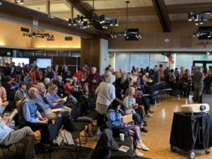

CELEBRATING HISTORY REVEALED
On April 11, 2019 the Chinese Railroad Workers in North America Project at Stanford issued an open invitation to our special event commemorating the 150th Anniversary of the Golden Spike and celebrating the Chinese Workers and the Transcontinental Railroad. We hosted an estimated four hundred members of the Stanford community, general public, and scholars from the project’s international network.
This event took place on the campus of Stanford University
Public Reception
The immense audience visited multiple computer presentation stations that showcased our research results of the enduring legacy of the Chinese railroad workers.
Digital presentation stations showcased the wide range of the project’s web-based platforms –
Student Research
Digital Materials Repository of Historical Materials in the Chinese Railroad Workers in North America Project Repository in Stanford Library
The celebration also featured the temporary installation of the traveling exhibition of the historical and contemporary photographs by Li Ju.
Documentary Film
We featured the world premier screening of the new documentary film: “Making Tracks: The Phillip P. Choy Story,” a documentary film by Barre Fong and Connie Young Yu. This film featured interview material from the Chinese Railroad Workers in North America Project’s Oral Histories collection.
Plenary Session
The celebration featured a plenary event, moderated by Roland Hsu, Director of Research, with formal remarks –
Seven years in the making and in anticipation of this anniversary, the Chinese Railroad Workers in North America project brings to light the important and often over-looked story of the thousands of Chinese laborers who were involved in the construction of the railroad…
Today Stanford honors the contribution of the Chinese railroad workers to the establishment of the university. We honor the memory of these courageous migrant workers and recognize their many contributions to our country and their important role in this pivotal moment in history. [Full Text]
— Persis Drell, Provost, Stanford University
I want to offer a few words about this photograph behind me. It is emblematic of many challenges and themes we have encountered in our work. Why do we have this backdrop? In recent years, taken as a symbol of the marginalization, even erasure of Chinese from the epic story of the transcontinental. They largely completed the work on the western portion of the line, but where are they in the photo? They were deliberately excluded and as one of the most famous photographs of the 19th century, they were omitted from the story, literally this image and in many tellings. But we know they were present. In fact, a Chinese or several are in the photo.
Our project has made major advances in understanding a variety of critical issues of 19th century history, US as well as Chinese histories: among them, we learned about the home villages and lives of the Chinese migrants in the Pearl River Delta; we have insight into ways of life, work, and belief. We know about how they came to the US and continued to have relationships with region and family in China. We learned about how they came to join the immense construction project, the work they completed, the way they organized themselves as work teams.
Thank you for your interest. We call on you to learn the history and then spread your knowledge. Join us in helping recover history and establishing Chinese railroad workers in the history of America. Help us make history!
— Gordon H. Chang, Co-Director
Our project had its origin in an email I sent to Gordon Chang in December, 2011, with the subject line, “a pipe dream or a brainstorm or maybe a really good idea,” in which I suggested that Stanford launch a transnational, interdisciplinary research project to recover this neglected chapter of the past. Early support from then-Provost and Acting President John Etchemendy enabled Gordon and me to launch the Project, and a series of workshops and conferences in the US and Asia laid the groundwork for the kinds of collaboration that allowed it to flourish. The Project involved scholars in multiple locations to explore topics from fresh perspectives. The Project has been the impetus behind four books in Chinese and English (which were on display at the event), many journal articles, a traveling historical exhibit, a traveling photographic exhibit, digital visualizations, a digital repository, and even an oratorio that will debut at Stanford in the fall. None of this would have been possible without the dedicated engagement and support of myriad individuals, including the Project’s core team, and the many others who contributed expertise, resources, and enthusiasm.”
— Shelley Fisher Fishkin, Co-Director
Today, we celebrate their [Chinese railroad workers’] accomplishments as laborers, constructing the vast transportation network that transformed the American West. But through archaeology, we also begin to understand their larger experiences as people beyond their jobs, caring for themselves in adverse conditions, building relationships not only with each other but also with the local communities they passed through, and relaxing alone or with friends after a hard days work. It is this legacy – of persistence and community – as well as the legacy of their labor – that archaeology calls on us to commemorate.
— Barbara Voss, Director of Archeology Network
The importance of our oral history project is that we learn whatever we can about [Chinese Railroad Workers’] ancestors, and also about the development of the families. This is literally a way for descendants to get a voice in history. The interview video with Phil Choy is a wonderful use of the project’s oral history materials. Even though Choy was not present in 1869 he was in 1969, and his firsthand account of that disaster is valuable. Scholars and students can now use these interviews for their research.
— Hilton Obenzinger, Associate Director
We have taken up the challenge from Phil Choy and our predecessors to write this neglected history of the Chinese who risked their lives, left their families, and traveled across the ocean to build the railroad and their fortunes. We honor their lives and accomplishment; we celebrate our recovered collective memory. We pass along to the next generation this challenge to discover the personal voices of these Chinese railroad workers.
— Roland Hsu, Director of Research
Among many contributions that the Spatial History Project and the Center for Spatial and Textual Analysis (CESTA) has brought to this project, we highlight the digital publication of a virtual reconstruction of key sites the railroad. The piece chronicles the progress of construction while putting emphasis on the role that climate and topography. For it was arguably these extreme physical conditions that might be partially credited for contributing to the strike and helping to improve pay for the Chinese workers. Overlaying images from this story into a present day map ultimately attempts to reconnect readers to the continuity of history, evoking images of the lasting presence of the Chinese and other laborers in today’s landscapes. It encourages people to examine what has become of those spaces and places: how have they changed over time, and what evidence lingers of the experiences of the Chinese and others who forged their significance to American history?
— Erik Steiner, Digital Media Creative Director, Center for Spatial and Textual Analysis (CESTA)
Since the 1970s, the mission of the Stanford Program on International and Cross-Cultural Education (SPICE) has always been to make Stanford’s scholarship accessible to teachers and students. The Chinese Railroad Workers Project lessons touch on many key issues in the high school social studies standards, including the building of the Transcontinental Railroad, immigration to the United States, challenges faced by immigrants, the Chinese Exclusion Act, and the growth of the American West.
— Gary Mukai, Director, Stanford Program in International Cooperative Education (SPICE); Greg Francis, Freelance Author, SPICE
Book Sales –
Multiple new print titles by authors from the Chinese Railroad Workers in North America Project team were for sale and in high demand.
The Chinese and the Iron Road: Building the Transcontinental Railroad
The Ghosts of Gold Mountain: The Epic Story of the Chinese Who Built the Transcontinental Railroad
Finding Hidden Voices of the Chinese Railroad Workers: An Archeological and Historical Journey
Chinese Railroad Workers in North America: Recovery and Representation
Historical Archeology (49:1): The Archeology of Chinese Railroad Workers in North America
Special Recognition Honorees –
We concluded with an expression of our great appreciation for these extraordinary team members who have dedicated their time and resources to support our research:
Monica Yeung Arima, Adrian Arima, Barrre Fong, William Fung, Joseph Ng, Lea Anne Ng, Connie Young Yu, Selia Tan
In special recognition —
April 11, 2019. On the occasion of our public commemoration of the 150th anniversary of the completion of the first transcontinental rail line across the United States and the Golden Spike ceremony at Promontory Summit, Utah on May 10, 1869, we honor you as an outstanding member and distinguished contributor to our Chinese Railroad Workers in North America Project at Stanford University.
Together we have completed an extraordinary amount of research into textual materials and material culture, and have uncovered an unprecedented amount of information about the thousands of Chinese who helped build the line. We have completed publications that greatly expand and deepen our collective understanding of and appreciation for what they experienced, and we have developed public educational materials that are advancing awareness of this vital part of American and Chinese histories.
Your contribution has been indispensable and inspiring for us and for our large network of participating scholars.
Together our work has assured the Chinese railroad workers a prominent place in public and collective memory, and has revived engagement with their stories in scholarship and classrooms for generations to come.
With deepest appreciation,
Gordon H. Chang
Shelley Fisher Fishkin
Support For This Public Celebration –
For this commemorative event and celebration we thank the following Stanford offices for their research, technical, and administrative assistance: American Studies Program, Stanford Archeology Center, Center for East Asian Studies, Center for Spatial and Textual Analysis, Department of History, Digital Library Systems and Services.
The Chinese Railroad Workers in North America Project at Stanford gratefully acknowledges the support of numerous organizations and individuals at Stanford University and additional institutions including:
Stanford University Office of the President and Office of the Provost; Office of the Vice Provost and Dean of Research; Office of the Vice Provost for Undergraduate Education; Bill Lane Center for the American West; Stanford University Libraries and Information Resources; American Studies Program; Center for East Asian Studies; Center for Spatial and Textual Analysis; Department of Anthropology, Lang Fund for Environmental Anthropology; Department of English; Department of History; Dean of Research; Stanford Global Studies; Stanford UPS Foundation Endowment Fund, Office of Community Engagement and Diversity; Roberta Bowman Denning Fund for Humanities and Technology.
Guangdong Qiaoxiong Cultural Research Center, Wuyi University, Jiangmen; Sun Yat-sen University, Guangzhou; Department of Foreign Languages and Literatures, National Chiao Tung University; Institute of European and American Studies at Academia Sinica; National Science Council of Taiwan; National Sun Yat-sen University; National Taiwan University; National Taiwan Normal University.
American Council for Learned Societies; Chiang Ching-kuo Foundation; National Endowment for the Humanities; Consulate General of the People’s Republic of China in San Francisco; Duxiu Corporation; Guangxi Normal University Press (Group) Company, Ltd; Madeleine Haas Russell Fund for Chinese Studies; Renée B. Fisher Foundation.
Monica and Adrian Arima; Mr. and Mrs. Donald J. Atha; William K. Fung; Joseph Ng.
The full list of acknowledgements is here.